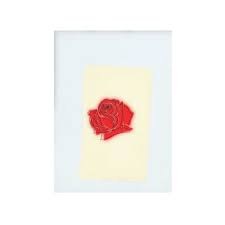

I was born on August 30, 1918, in San Diego, California and am widely considered one of baseball's all-time great players. My childhood was shaped by the absence of my parents in much of my life. My father worked often, first as a photographer, and later as a U.S. marshal. My mother was a strong-willed woman who spent much of her time parading the streets of San Diego, protesting what she considered to be the evils of alcohol. Some nights, I and my brother Danny had to sit outside until 10 at night to wait until our parents came home to let us in the house. Without much of a home life, I found refuge at the park, especially the baseball diamond. I was an adept hitter as a child and as I got older and my body grew, I proved to better than anyone I played with. At Herbert Hoover High School, I continued to hit, registering a .538 average my junior year. I also pitched, finishing with a 16-3 record. At the age of 17, I, embarked on my dream to become a pro baseball player and signed to play with the San Diego Padres of the Pacific Coast League throughout the summer for $150 a month. Over the next few summers, I played for the Padres. After a stellar 1937 season, the Boston Red Sox signed me to a two-year deal. Optioned to the club's minor league team in Minneapolis, I tore the cover off the ball in 1938, taking home the league's Triple Crown by leading all hitters in hitting (.366), home runs (43) and RBIs (142).
